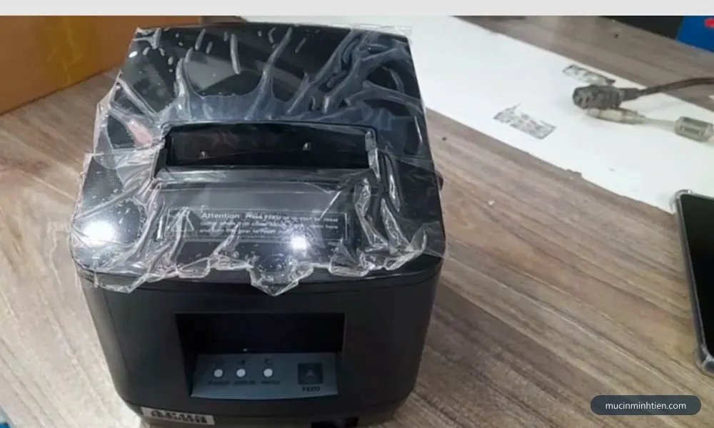
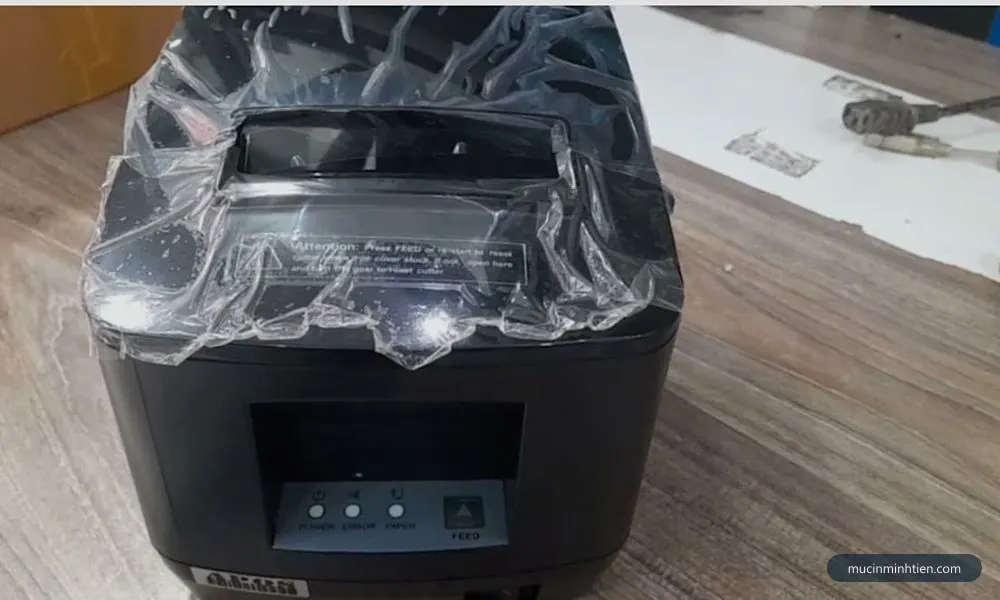
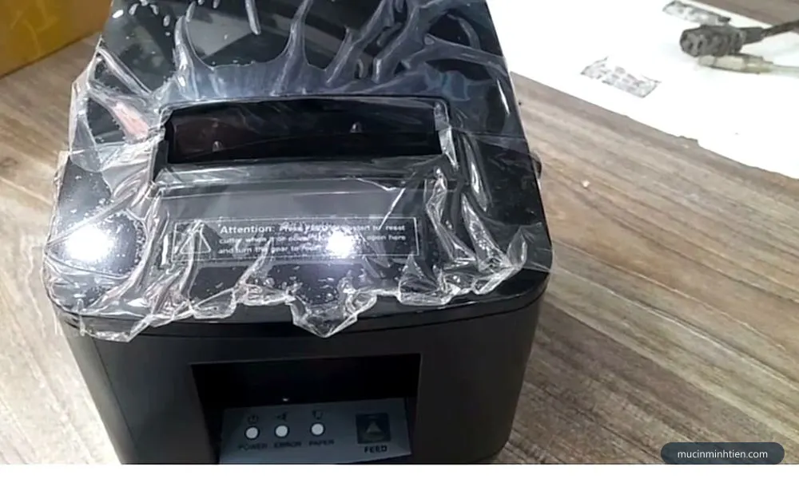
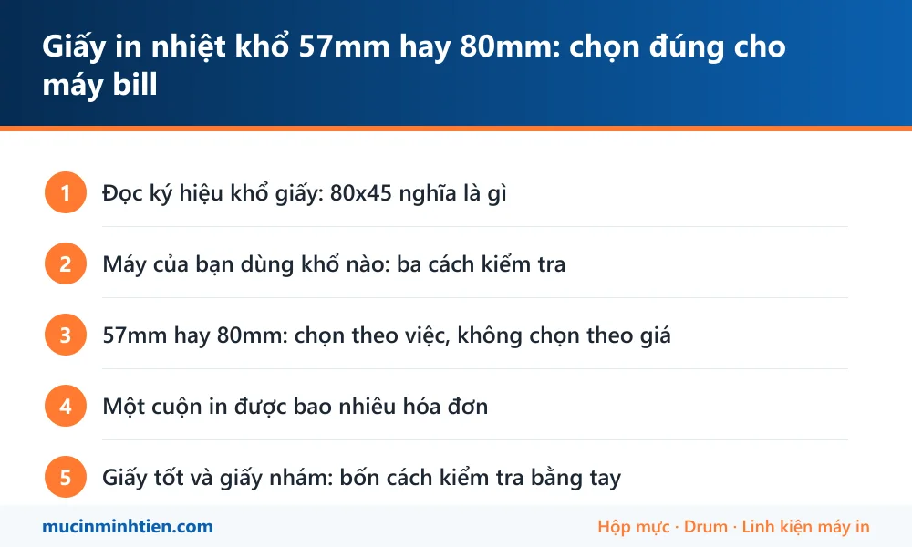

Giấy in nhiệt khổ 57mm hay 80mm: chọn đúng cho máy bill
Máy của bạn dùng khổ nào: ba cách kiểm tra
- Đo cuộn giấy đang dùng. Đặt thước ngang cuộn, đo chiều rộng. Ra 57 hay 80 là biết ngay.
- Đo khoang chứa giấy. Mở nắp, đo chiều rộng lòng khoang. Đo luôn đường kính lòng khoang để biết cuộn tối đa lắp vừa.
- Xem tem thông số dưới đáy máy. Thường ghi khổ giấy hỗ trợ và cả chiều rộng vùng in.
Nhiều máy 80mm có sẵn cặp vách ngăn nhựa gạt được trong khoang, đẩy vào là thu hẹp xuống 57mm. Có vách ngăn nghĩa là máy dùng được cả hai khổ — nhưng nhớ đổi khổ giấy trong driver cho khớp, nếu không chữ bị cắt mất hai bên.

57mm hay 80mm: chọn theo việc, không chọn theo giá
| Khổ | Hợp với | Ưu điểm | Hạn chế |
|---|---|---|---|
| 57 mm | Máy POS cầm tay, máy in bill mini, phiếu gửi xe, phiếu số thứ tự | Cuộn nhỏ gọn, máy nhẹ, tiêu thụ ít giấy cho phiếu ngắn | Mỗi dòng ít ký tự, hóa đơn nhiều mặt hàng phải cắt chữ hoặc xuống dòng liên tục |
| 80 mm | Máy in bill để bàn ở quán ăn, cà phê, cửa hàng, siêu thị mini | Mỗi dòng đủ chỗ cho tên món dài, số lượng và thành tiền; hóa đơn dễ đọc | Máy to hơn, cuộn giấy chiếm chỗ hơn |
Nguyên tắc thực tế: hóa đơn có bảng kê nhiều dòng thì chọn 80mm. Quán ăn in phiếu chế biến gửi bếp, hay cửa hàng in hóa đơn có tên hàng dài, mà dùng 57mm thì tên món bị cắt hoặc bị xuống dòng lộn xộn, nhân viên đọc nhầm. Ngược lại phiếu gửi xe hay số thứ tự chỉ vài dòng thì 57mm gọn và tiết kiệm hơn.
Một cuộn in được bao nhiêu hóa đơn
Đây là con số cần biết để lập kế hoạch mua, và hầu như không nơi bán nào nói ra.
Cuộn 80x45 thường dài khoảng 20 đến 25 mét tùy độ dày giấy. Một hóa đơn quán ăn dài chừng 20 cm, vậy mỗi cuộn cho khoảng 100 đến 125 hóa đơn. Hóa đơn siêu thị nhiều dòng dài 30 đến 40 cm thì chỉ còn 50 đến 80 tờ.
Muốn tính chính xác cho cửa hàng mình, làm ba bước:
- In một hóa đơn thật, đo chiều dài bằng thước.
- Lấy chiều dài cuộn chia cho chiều dài hóa đơn để ra số tờ mỗi cuộn.
- Lấy giá một cuộn chia cho số tờ để ra chi phí giấy trên mỗi hóa đơn.
Con số cuối cùng này thường chỉ vài chục đồng mỗi hóa đơn. Đặt cạnh nó chi phí thay một đầu in nhiệt, bạn sẽ thấy tiết kiệm ở khâu giấy là tiết kiệm sai chỗ.

Giấy tốt và giấy nhám: bốn cách kiểm tra bằng tay
Không cần thiết bị, làm ngay tại quầy trước khi lấy hàng:
- Sờ mặt in. Giấy tốt trơn mịn. Giấy kém thấy ráp — chính bề mặt ráp này mài mòn lớp phủ bảo vệ của đầu in.
- Cào móng tay lên mặt in. Hiện vệt đen đậm và rõ là lớp phủ còn tốt. Vệt xám nhợt nghĩa là giấy kém hoặc đã để quá lâu.
- Vuốt mép cuộn. Thấy bụi trắng bám tay là giấy nhiều bụi, sẽ bám lên đầu in và làm bản in nhạt từng vệt.
- Nhìn mép cắt. Mép cắt gọn, cuộn đều, không lệch tầng. Cuộn quấn lệch gây kéo giấy lệch và mòn con lăn không đều.
Ba thứ này liên quan trực tiếp tới hai lỗi hay gặp nhất trên máy in bill: in mờ, chữ nhạt và mất vạch trắng ngang.
Ba loại giấy hay bị mua nhầm cho nhau
- Giấy in nhiệt. Tráng lớp hóa chất tự đổi màu khi gặp nhiệt. Đây là loại dùng cho máy in bill và máy in vận đơn. Chỉ in được một mặt.
- Giấy chuyển nhiệt. Dùng để ép hình lên áo, ly, vật liệu khác qua máy ép nhiệt. Tên gần giống nhưng không in được trên máy in bill.
- Giấy decal thường. Có keo nhưng không có lớp cảm nhiệt, phải in bằng máy có ruy băng hoặc máy laser. Lắp vào máy in nhiệt thì ra giấy trắng.
Khi đặt hàng, nói rõ giấy in nhiệt cho máy in hóa đơn kèm khổ và đường kính là không nhầm được. Máy in vận đơn thì cần loại decal cảm nhiệt, chi tiết ở bài máy in nhiệt khổ A5 in đơn hàng.

Bảo quản giấy in nhiệt cho đúng
Lớp phủ cảm nhiệt phản ứng với nhiệt, ánh sáng, độ ẩm và dầu mỡ — nghĩa là nó xuống cấp ngay cả khi cuộn giấy chưa được dùng.
- Để nơi khô mát, tránh nắng trực tiếp. Cuộn giấy để cạnh cửa kính hứng nắng sẽ ố vàng dần.
- Tránh xa bếp và khu vực nóng. Nhiệt làm giấy sạm màu trước khi kịp dùng.
- Không trữ quá nhiều nếu bán chậm. Mua đủ dùng vài tháng thay vì ôm hàng cả năm.
- Giữ nguyên bọc nylon tới khi dùng. Bọc chống ẩm và chống bụi tốt hơn nhiều so với để cuộn trần trong ngăn kéo.
- Hóa đơn cần lưu lâu thì photocopy hoặc chụp lại. Bản in nhiệt phai dần theo thời gian, đó là đặc tính của giấy chứ không phải lỗi máy.
Giá giấy in nhiệt tại kho
Giấy in nhiệt khổ 80mm có sẵn, bán theo lốc để giá tốt hơn mua lẻ.
| Loại giấy | Quy cách | Giá tham khảo |
|---|---|---|
| Giấy in nhiệt khổ 80mm | Lốc 10 cuộn | từ 50.000 đ |
| Giấy chuyển nhiệt khổ 80×75 | Combo 5 | 110.000 đ |
Danh sách đầy đủ và các quy cách khác nằm trong bảng giá 773 mã. Cần khổ khác hoặc số lượng lớn thì gọi 0915 510 203 để hỏi tồn kho trước khi đặt.
Mua giấy kèm luôn việc kiểm tra máy
Nếu bản in đang nhạt hoặc mất vạch, đổi giấy tốt hơn chỉ giải quyết được một phần. Đầu in đã bám lớp keo và bụi từ giấy cũ thì phải lau, và con lăn chai thì phải xử lý riêng. Kỹ thuật viên giao giấy kết hợp vệ sinh đầu in, con lăn và chỉnh lại độ đậm là cách gọn nhất — xem sửa máy in nhiệt: lỗi nào sửa được, lỗi nào nên thay để biết hạng mục nào đáng làm.
